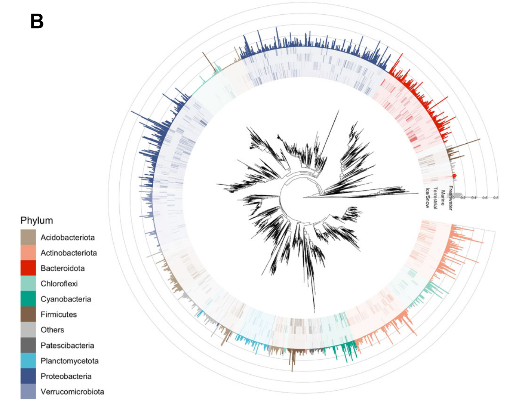
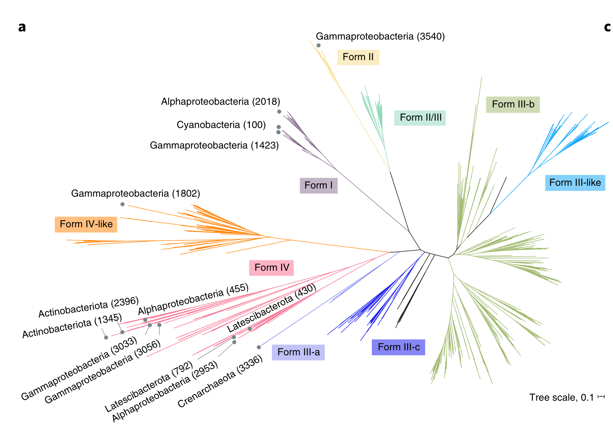
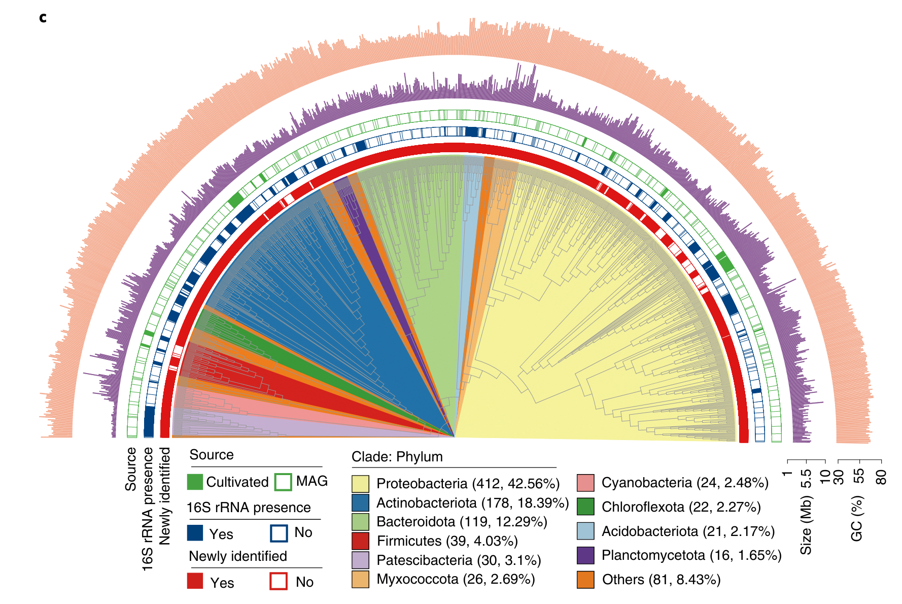
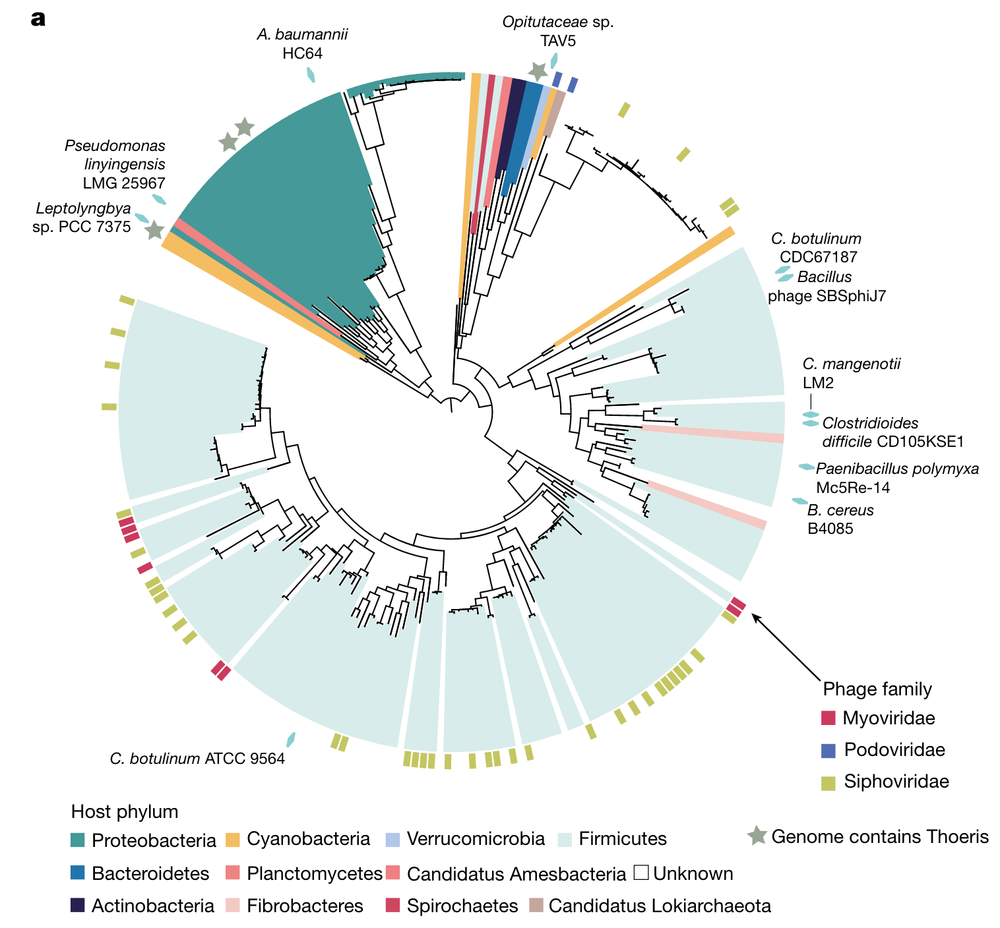

上次已经介绍过了使用R绘制系统发育树的基本用法，也埋下一个小坑：复现文章里好看的树，现在过来填坑了，哈哈哈。
我准备了一些文章里自己觉得很不错的树（当然尽可能风格不同），然后自己生成随机的树和一些随机的无科学意义的注释（仅供画图参考！！！），主要是用ggtree和ggtreeExtra进行代码复现，争取把树的主体都用代码完成，当然一些小细节就还是不得不使用AI等pdf编辑软件进行添加了。
Preparation
首先还是要把我们要用的一些包都安装好并导入进来。
|
|
然后需要准备一些函数：
|
|
Example1
第一个例子来自Nature Communication的一篇文章 (1)，这是一个相对简单的树。
按照ggplot搭积木的逻辑，我们看看有哪些需要画的：
- 树的主体，圆形布局，并打开一个小角度，方便展示注释信息的x轴label
- 外圈注释1，热图形式（tile），颜色代表每一个tip的Phylum，透明度代表相对丰度
- 外圈注释2，柱形图形式（col或bar），颜色代表每一个tip的Phylum，高度代表SVM系数
相应的我们生成数据：
|
|
## node Phylum Ice/Snow Terrestrial Marine Freshwater
## 1 t339 Cyanobacteria 0.0007693819 0.000448952905 0.00003100616 0.00034017986
## 2 t1180 Cyanobacteria 0.0002356377 0.000483643521 0.00124672220 0.00009722752
## 3 t1807 Cyanobacteria 0.0002908480 0.000035084895 0.00074445757 0.00011096549
## 4 t572 Cyanobacteria 0.0019889166 0.000108407239 0.00098076293 0.00014436096
## 5 t1739 Cyanobacteria 0.0004149838 0.000004413762 0.00006021236 0.00006270886
## 6 t1245 Cyanobacteria 0.0004753852 0.000004451763 0.00015540813 0.00011400371
## SVM
## 1 0.0001332960
## 2 0.0474528998
## 3 0.0222924708
## 4 0.0001208082
## 5 0.0169753369
## 6 0.0277805382
有了树和注释数据，我们开始绘图：
|
|

|
|
## node Phylum Env Abundance
## 1 t339 Cyanobacteria Ice/Snow 0.0007693819
## 2 t1180 Cyanobacteria Ice/Snow 0.0002356377
## 3 t1807 Cyanobacteria Ice/Snow 0.0002908480
## 4 t572 Cyanobacteria Ice/Snow 0.0019889166
## 5 t1739 Cyanobacteria Ice/Snow 0.0004149838
## 6 t1245 Cyanobacteria Ice/Snow 0.0004753852
|
|

|
|

Example2
第二个例子来自Nature Microbiology的一篇文章 (2)。
我们看看有哪些需要画的：
- 树的主体，比较特别的布局（equal_angle），并且树枝要加上一些Form的分类颜色信息,再加上一个scale标尺
- 外圈注释1，标签，在每类分支附近，背景颜色是Form的分类
- 外圈注释2，点和文字，应该是手动挑选的一些节点，在树枝顶端加上了灰点以及黑色文字
相应的我们生成数据：
|
|
有了树和注释数据，我们开始绘图：
|
|

|
|

|
|

当然文字和标签的位置有点不太好，需要导出pdf再稍微调整一下。
Example3
第三个例子来自Nature Biotechnology的一篇文章 (3) 。
我们看看有哪些需要画的：
- 树的主体，层级树的感觉（把branch.length忽略了，所有的tip在一个位置），打开角度为180，灰色树枝
- 内圈注释，给部分clade加上不同Phylum的背景颜色
- 外圈注释1，3圈热图，用的是有无数据
- 外圈注释2，2圈柱形图，Size和GC含量
相应的我们生成数据：
|
|
## # A tibble: 6 × 7
## node Phylum1 Source `16S rRNA presence` Newly identifie…¹ Size …² GC (%…³
## <chr> <fct> <chr> <chr> <chr> <dbl> <dbl>
## 1 t876 Others MAG No Yes 9 45.2
## 2 t896 Others MAG No Yes 6 71.6
## 3 t437 Others MAG No Yes 9 59.7
## 4 t750 Others MAG Yes Yes 8 70.4
## 5 t270 Others Cultivated Yes Yes 9 44.7
## 6 t412 Others MAG No Yes 8 37.1
## # … with abbreviated variable names ¹`Newly identified`, ²`Size (Mb)`,
## # ³`GC (%)`
|
|

|
|

|
|

|
|

Example4
第四个例子来自Nature的一篇文章 (4)。这个图是用iTOL做的，因为iTOL支持直接画tip到圆等半径的空间颜色填充。但是我觉得用R还是一样能画。
我们看看有哪些需要画的：
- 树的主体，很正常，打开小角度，开口在左上角
- 内圈注释，给部分clade加上不同Phylum的颜色，但是这个色块是加在tip到圆等半径的空间（这个很有意思，还没有看到过别人用R实现过）
- 外圈注释1，方块代表phage，颜色代表family
- 外圈注释2，灰色五角星代表Genome contains Thoeris
- 外圈注释3，绿色菱形加上文字
相应的我们生成数据：
|
|
|
|

|
|

|
|

呼～，暂时先做这几个图吧，再次强调，这是生成随机的树和一些随机的无科学意义的注释（仅供画图参考！！！）。
如果你有好看的图需要复现或者有什么绘图上的问题，欢迎联系。
Reference
1. M. Bourquin, S. B. Busi, S. Fodelianakis, H. Peter, et al., The microbiome of cryospheric ecosystems. Nature Communications. 13, 3087 (2022).
2. M. Royo-Llonch, P. Sánchez, C. Ruiz-González, G. Salazar, et al., Compendium of 530 metagenome-assembled bacterial and archaeal genomes from the polar Arctic Ocean. Nature Microbiology. 6, 1561–1574 (2021).
3. Y. Liu, M. Ji, T. Yu, J. Zaugg, et al., A genome and gene catalog of glacier microbiomes. Nature Biotechnology. 40, 1341–1348 (2022).
4. A. Leavitt, E. Yirmiya, G. Amitai, A. Lu, et al., Viruses inhibit TIR gcADPR signalling to overcome bacterial defence. Nature. 611, 326–331 (2022).